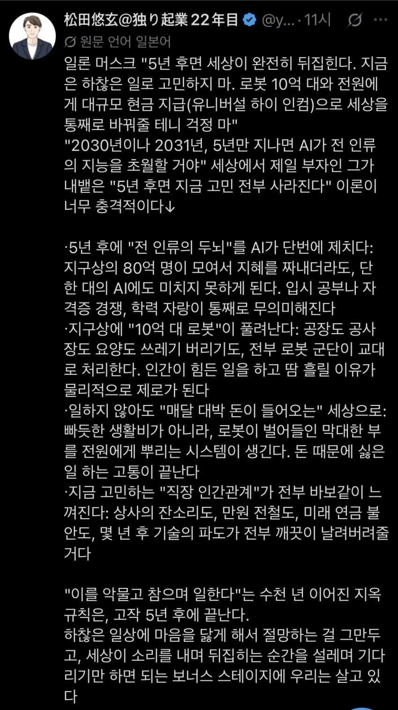

몇년만 있으면 AI가 대신 일해줘서 노동도 안하고, 세계의 모든 문제가 사라지고 경제적 자유가 찾아올거라 믿는 사람들
우리나라에서도 특슬람이라 불리는 사람들이 나대면서 활개치고 있다고 함
말하는 꼬라지보면 휴거마냥 구원처럼 믿고 떠받들어서 일반인들은 거부감 느낀다고 하는데....
근데 자본가들이 순순히 부를 나눠준다고...?

몇년만 있으면 AI가 대신 일해줘서 노동도 안하고, 세계의 모든 문제가 사라지고 경제적 자유가 찾아올거라 믿는 사람들
우리나라에서도 특슬람이라 불리는 사람들이 나대면서 활개치고 있다고 함
말하는 꼬라지보면 휴거마냥 구원처럼 믿고 떠받들어서 일반인들은 거부감 느낀다고 하는데....
근데 자본가들이 순순히 부를 나눠준다고...?
수십억 인간을 다 죽일수도 없고 어느정도 부를 내려놓지 않을까
씹딱취미가 대중화 되는 과정이랑 같음
최전선에서 직접 찾아다 찍먹한 흑우어답터들은 시간이 지나며 자연스럽게 대가리 굳으면서 어느정도 현실과 타협을 하게되는 반면 충분히 순화된 결과물을 뒤늦게, 그것도 사전준비 없이 등 떠밀려 맛 본 사람들이 정신 못차리고 주화입마 해버리는거
저건 허구일 확률이 높음.
전제가 잘못됐음.
Agi 대체되냐 안되냐가 아니라 본질인 '돈'을 몰라서 그럼.
돈은 수 많은 생산성(노동)을 보편적으로 교환하기 위한 수단임. 그래서 가치가 엄청나게 유동적임.
1. 세계가 아직 돈에 대해서 약속이 지켜져도 무인도나 고립. 재난 시 돈에 가치는 급속도로 사라짐.
고립 상태에서 '물 한 병' 식량 한줌이 있을때 1000악 화폐를 줘도 안바꿈. 거래가 안됨.
2. 전쟁시 전쟁국가는 화폐의 가치가 급락함. 이걸 막는게 세계금융과 국가들임. 최소한에 교환과 자본주의 질서를 버티게 하기 위해서임
로봇이 다 힘든일이나 자원으로 무한 사이클 돈다가 성립안됨.
모든 존재는 마모됨.
그걸 매우기 위해 자원이 필요한데 그걸 왜 다른 국가나 사람들이 지금처럼 교환할거라 생각함? 교환 안하지..
아니 이런 상황은 극단적이고 아직 안나왔다라 생각한다면 이미 자연에 생존에서 돈의 존재는 없음. 동물들 보면 됨.
뺏어야 생존인데 그게 가능할리가 우리가 ai를 논할 수 있는 국가라 그럼.
식민지 마인드임.
아프리카 자원국가가 ai 발전으로 로봇대체니 전인류를 위해 혹은 ai 국가를 위해 자원을 무상으로 반납해야한다라.. 그럼 남은건 전쟁임.
지금도 전세계 자원을 '돈'으로 교환하여 공장들을 만드는데 그 돈이 휴지가 되면 자원 흐름 끊기겠지.
Agi가 오면 사우디나 산유국이 석유 이제 공짜 이걸 용납한다는건데 안그려짐
ㅋㅋㅋㅋ어그로 잘끌렷네
저건 미국 및 몇몇강대국 한정임
한국이 낄수잇을지는모름
돈에 에서 내렸다
에너지, 식량은 현재 유한재인데
로봇이 알래스카 척박한땅, 신안섬에서
농사짓고, 소금만들고 하면 거의 무한재에
가까워지고 그때부터는 공산주의로 가는거지
AGI가 가져올 에너지,식량, 기타 모든자원혁명
이거는 왜 쏙빼고 가정을 하는거임?
중국 돼지공장만 봐도 알 수 있음 공급이 넘쳐나면 나눠줌? 그럴리가 ㅋㅋ
완전히 없어지진 않겠지만 대신 가격은 ㅈㄴ 싸지고, 점차적으로 변해가긴 할거임.
???: 통신사들이 돈을 벌면...
온갖 소비재 담합하고 닭값 내려도 치킨값 안내리는 여러 사례가 있음에도 가격이 싸진다고? 풉ㅋㅋㅋㅋ 바로 담합 on
그렇게 말하는 일론이 돈을 그렇게 악착같이 버는게 맞겠냐
재가 돈버는건 화성가려고 아님?
나이브하네
자신을 객관적으로 평가했을때
아무것도못하는 고기 1에게 굳이 먹을것과 좋은 생활을 보장할 이유가 있을까요?
로봇으로인한 자동화세상에 아무것도 못하게된 인간에대한 인권이 존재할수있을지부터 고민해봐야..
5년은 좀 오바고 10년 뒤면 가능할듯함
AI 발전 체감이 낮은 사람들은 본인이 하는 업무가 중요파트가 아니거나 구 시대 산업 or 노동집약적 산업이기 때문일거임.
직업, 직종이 지금부터 뙇하고 사라지는게 아니라 점점 필요성이 감소하고 있어서 일자리가 줄어드는 중임. AI가 침범하고 있는게 느껴짐.
지금 그 얘기가 아니야.
AI가 나를 먹여살린다고 ? 내가 할일이 없는데, 내가 필요없어졌는데, AI가 구지 ?
5년은 무리고, 20년 정도는 걸릴거라 본다
유토피아가 올 수도 디스토피아가 올 수도 혹은 둘 다 안 올 수도..
경제적 자유가 오기 직전의 혼란이 수년간은 일어날텐데 그건 어떻게 버티려고
모두가 공무원인것도 아니잖아
경제적 자유가 보장되려면 기본소득이 필요하고 이 기본소득이 필요하다고 인식되려면 인구가 급감 해야 함
자살을 하든 타살을 하든 인구가 최소 몇십퍼센트 이상은 날아가야 아..아앗! 하면서 급하게 제동거는게 기본소득임
인구가 변하지 않고 어떻게든 살아남는 사람들이 많으면 기본소득의 필요성은 못느낄거고
인구 급감할거도 없이
걍 실직자가 51%넘기면 기본소득의 필요성을 느낄꺼임
자본주의 좋아하는데 ai가격 떨어지면
한달에 몇만원주고 쓸 수 있는 ai쓰지 사람 을 쓰겠냐고
혼란의 30년 시작될듯
저렇게 될거라 생각은 하지만 그러기에는 제도마련이 필요하고, 그만큼 사람들의 인식도 따라가야됨
돈의 의미가 없어지면 안되니 오히려 기본 소득으로 자본주의를 유지시켜 줘야지
그 어느때보다 '내꺼'가 중요한 시대가 오겠지
되겠냐에요~
그때도 너가 사람으로 남아있을 수 있을까?
보통 지보다 높은 지능 가진 존재가 생기면 기존 생명체는 노예가 되서 사육되거나 멸종되지 않나.
댓글 좀 지우지말고 있어봐 5년후에 보게
여기 전부 미래를 예측하는 예언가들만 있는듯 ㅋㅋㅋ
ubi가 얼마나 지급될지는 사회 구조에 달린거라 모르지만,
적어도 초월적인 디플레이션이 발생한다 < 이건 확실하다고 생각함
물질적인 측면에서의 자산은 정말 많이 해결되긴 할거임 다른 가치가 중요시될수 있겠지만
일단 특슬람은 병신이긴함 ubi 어쩌고 개발자는 대체된다 어쩐다 말하는애 파보니까 정처기 n수하는 개백수드라
유토피아 아니면 디스토피아임
일을 안하고 돈을 받던가
아니면
일을 못하고 돈을 못받던가
돈이라는 개념이 남을지는 모르겠지만, 일단 니가 일은 못함
5년은 너무 빠르더라도 20년잡고 20년뒤 ai보다 더 값싸게 잘할자신있는거 말해봐
그럼 계급이 또 나뉘지
사라지지 않는 직업이 있으니
풀로 자동화 되고 실업률 90%되면 생활비 안나눠주고 버틸 수나 있겠냐 바로 혁명 일어날텐데
생산성만 엄청나게 늘어난건데 돈이 의미가 있나
돈 이전에 인간대부분이 쓸모가 없어지는데
노동해방이 아니라 노동배제의 날이 오는거지
낙수 이론의 세계화!!!!!
후자는 이미 인터넷 되면 알고있음